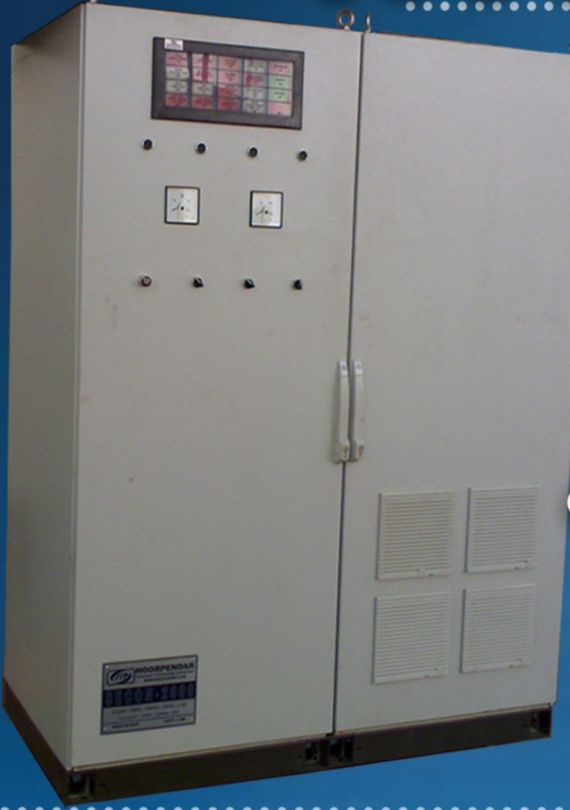

SECON-2000 Series
سیستم تحریک استاتیک تریستوری با AVR دیجیتال
سیستم کامل تحریک ژنراتورهای سنکرون، شامل کنترلکنندهی دیجیتال مبتنی بر PLC، پل تریستوری، یونیت آتش پالس، ترانسفورماتور تغذیه (Shunt Transformer یا PMG)، تجهیزات اندازهگیری و HMI لمسی.
- جریان تحریک تا 2000A و قابل ارائه در ولتاژهای مختلف
- سه مد کنترل: ولتاژ، ضریب قدرت و توان راکتیو
- پل یکسوساز ششتریستوری ۱۲ پالس تمامموج؛ امکان Redundancy برای بخش کنترل و پل
- Crowbar & Field Discharge و Field Flashing با فناوری IGBT
- حفاظت اضافهولتاژ میدان، محدودکنندههای تحریک و ظرفیت اضافهبار کوتاهمدت
- نمایش و کنترل محلی و از راه دور، تشخیص و ثبت خطا